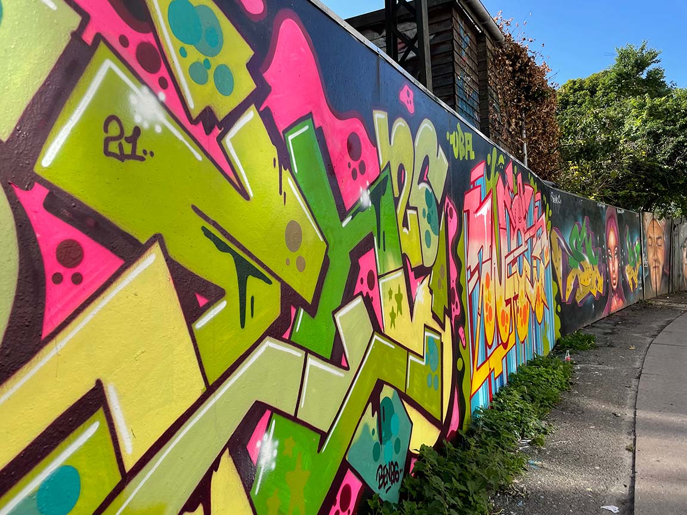

FØR

Du skal udvælge mindst ét billede fra serien af billeder, der blev taget under ekskursionen. Billedet/billederne behøver ikke at være et af dem, du selv har taget. Men ingen billeder fra nettet – udgangspunktet skal være "vores eget/mul studerendes" materiale. Billedet/billederne skal behandles i Photoshop således at der som minimum er foretaget følgende: Fjern et element: Noget på billedet skal fjernes og baggrunden (hullet bagved) skal fyldes ud så det passer med billedet. Tilføj et element: Noget som ikke oprindeligt var i billedet, skal sættes ind, så det ser ud som om, det var der fra starten. Ret billedets lysforhold eller tilfør billedet en stemning med filter eller farvetoning Beskæring og evt opretning (lodret/vandret) af billede. Format og størrelsen: billedet skal være i format 4:3 og gemmes så størrelsen er ≦ 1 M pixel Upload det oprindelige, uredigerede billede side om side med din redigerede version, størrelsestilpasset på samme måde (≦ 1 M pixel)
En portfolio er et professionelt værktøj, som bruges til at vise dine kommende arbejdsgiver, hvem du er og hvad du kan. Nu har du muligheden for at skitsere dit første oplæg til et portfolio i Adobe XD eller lignende prototypeværktøj. Aflever 1 PDF-fil (max. 3 sider og max. 10 MB) som kort beskriver og dokumenterer din prototype – hvilket indhold har du valgt, hvordan ser den ud og hvorfor? Tilføj et link i PDF'en til en online version af jeres portfolio (brug Adobe XD's "publish prototype"-link)